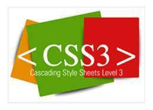

para que sirve el ccs3?
El CSS sirve para definir la estética de un sitio web en un documento externo y eso mismo permite que modificando ese documento (la hoja CSS) podamos cambiar la estética entera de un sitio web, el mismo sitio web puede variar totalmente de estética cambiando solo la CSS, sin tocar para nada los documentos HTML o jsp o asp que lo componen.
CSS es un lenguaje utilizado para dar estética a un documento HTML (colores, tamaños de las fuentes, tamaños de elemento, con css podemos establecer diferentes reglas que indicarán como debe presentarse un documento. Podemos indicar propiedades como el color, el tamaño de la letra, el tipo de letra,como colores de fondo de una pagina, tamaños de un elemento (por ejemplo el alto y el ancho de una tabla..
Imagen extraida de:
https://dc722jrlp2zu8.cloudfront.net/media/cache/11/
6c/116c04b1139afc97ced9c76773142a49.webp

funcionamineto
Cuando desde un navegador, por ejemplo Chrome, solicitamos una página a través de una dirección, por ejemplo http://..../index.html, esta petición va a un servidor web, que nos devuelve la página que se ha solicitado.
Para aplicar estilos en las páginas HTML, se utiliza un fichero aparte, una hoja de estilos con la extensión .css, por lo que cuando estos dos documentos llegan al navegador, va a leer el documento HTML, le aplica los estilos CSS y lo muestra.
Imagen extraida de: https://dc722jrlp2zu8.cloudfront.net/media/cache/11/
6c/116c04b1139afc97ced9c76773142a49.webp
ventajas
Se obtiene un mayor control de la presentación del sitio al poder tener todo el código CSS reunido en uno, lo que facilita su modificación.
Al poder elegir el archivo CSS que deseamos mostrar, puede aumentar la accesibilidad ya que podemos asignarle un código CSS concreto a personas con deficiencias visuales, por ejemplo. Esto lo detecta el navegador web.
Conseguimos hacer mucho más legible el código HTML al tener el código CSS aparte
Pueden mostrarse distintas hojas de estilo según el dispositivo que estemos utilizando (versión impresa, versión móvil, leída por un sintetizador de voz…) o dejar que el usuario elija.
Gracias a la técnica CSS Sprites podemos aligerar la carga de nuestro sitio al juntar todas las imágenes en una.
Las novedades de CSS3 nos permiten ahorrarnos tiempo y trabajo al poder seguir varias técnicas (bordes redondeados, sombra en el texto, sombra en las cajas, etc.) sin editor ortografico.
imagen extraida de:https://3.bp.blogspot.com/-ToNPFw8Cj7U/TzDSjhRmkZI/AAAAAAAAG0g/aI_mGUGrsy0/s000/border-radius.png

desventajas
Existen limitaciones que CSS 2.x todavía no permite, por ejemplo, la alineación vertical de capas, las sombras, los bordes redondeados…
El uso de las tablas nos permitía crear diseños complejos de forma mucho más sencilla que utilizando CSS, aunque CSS3 está intentando facilitar dicho trabajo.
A veces, dependiendo del navegador (Acid tests), la página que ha sido maquetada con CSS puede verse distinta (Aunque, si hemos seguido los estándares web de forma correcta, el problema es del navegador).
imagen extraida de:https://www.ecured.cu/images/4/4d/Css3.jpg
referencias de texto:
https://www.ecured.cu/CSS3